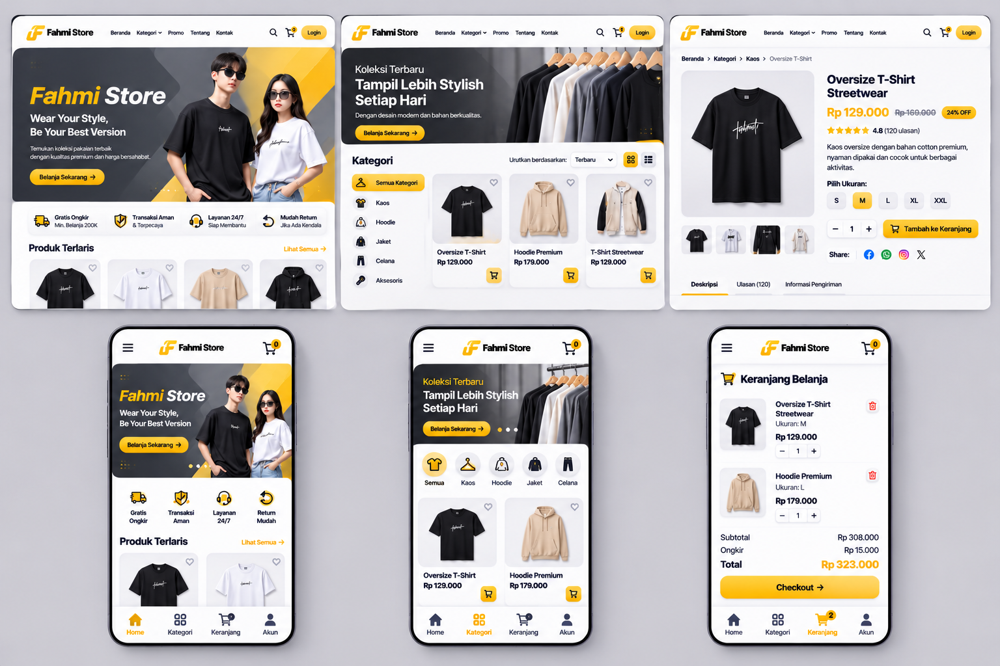

Clothing Store E-Commerce Website adalah platform penjualan pakaian berbasis WordPress yang dikembangkan untuk mendukung proses pemasaran dan transaksi produk fashion secara digital. Website ini memungkinkan pelanggan untuk menjelajahi katalog produk, melihat detail pakaian, mencari produk berdasarkan kategori, serta melakukan pemesanan dengan lebih mudah dan praktis. Dengan memanfaatkan WordPress sebagai Content Management System (CMS), website dapat dikelola dengan lebih fleksibel, mulai dari penambahan produk baru, pengelolaan kategori, pengaturan stok, hingga pembaruan informasi promosi. Selain itu, desain website dibuat responsif sehingga memberikan pengalaman pengguna yang optimal baik melalui perangkat desktop maupun mobile. Sistem ini membantu pemilik usaha memperluas jangkauan pemasaran sekaligus meningkatkan efisiensi dalam pengelolaan toko online.
... Lihat Selengkapnya